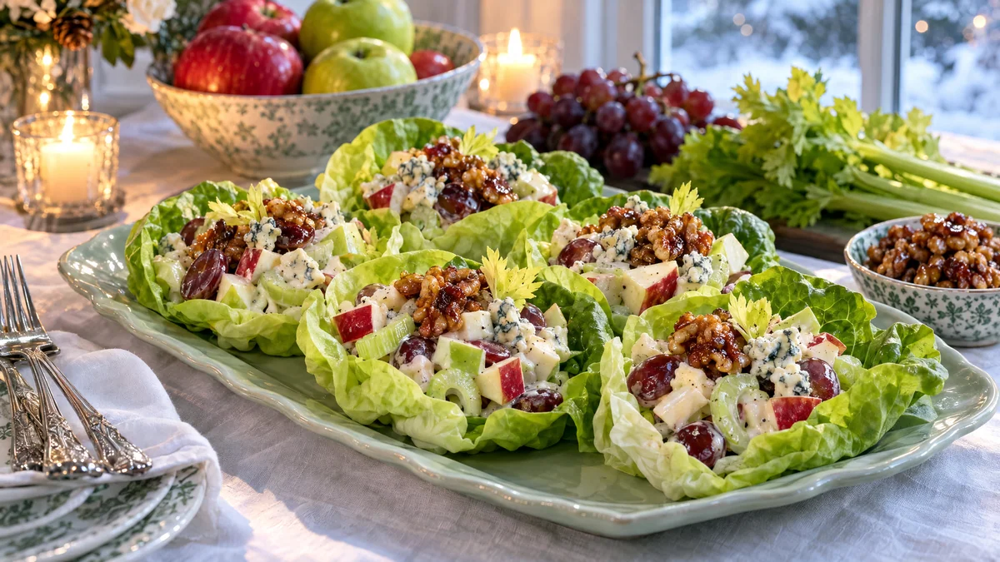

RESTFEST · RECEPTSallad · Tillbehör
Krispig waldorfsallad med äpple, selleri och glaserade valnötter
Ett par äpplen, några stjälkar blekselleri och en näve valnötter. Allt vänds i en lätt, citronfrisk dressing på yoghurt och majonnäs och serveras i små skålar av smörsallad, toppat med glänsande glaserade valnötter och druvor. En hotellklassiker från 1890-talets New York, lika snygg på julbordet som till en vardagslunch.
- Förberedelse
- 20 min
- Tillagning
- 5 min
- Portioner
- 4 som tillbehör
- Nivå
- Nybörjare
 Det här behöver du
Det här behöver du
JÄMFÖRT MED DIN KYL
Tryck på + vid det du behöver köpa.
Glaserade valnötter
Sallad
Dressing
Till servering
Gör så här
- Rosta valnötterna i en torr stekpanna på medelvärme i 3 minuter. Strö över socker, smör och salt och rör hela tiden i 1–2 minuter, tills sockret har smält och glaserat nötterna. Häll upp dem på bakplåtspapper och sära på dem så att de inte klistrar ihop.
- Kärna ur äpplena och skär dem i tärningar, ca 1 cm. Låt skalet sitta kvar, det ger färg. Vänd tärningarna direkt i citronsaften så att de inte mörknar.
- Skär sellerin i tunna, sneda skivor. Spara de ljusgröna bladen till garnering. Dela druvorna.
- Rör ihop majonnäs, yoghurt, citronsaft, honung, salt och peppar.
- Hacka hälften av valnötterna grovt. Vänd ner äpple, selleri, druvor och de hackade nötterna i dressingen precis före servering, annars blir salladen vattnig.
Dekoration och servering
- Lägg de inre, skålformade bladen av smörsalladen på ett fat och fyll dem med salladen.
- Toppa med resten av de glaserade valnötterna, några halva druvor och sellerins blad.
- Smula över lite ädelost om du vill, det ger en salt kontrast mot det söta.
- Passar till julskinka och rostad kyckling, eller som lätt lunch med bröd.
Mått och ugnstemperaturer
Måtten är svenska (dl, msk, tsk, krm). Ugnstemperaturerna gäller vanlig ugn med över- och undervärme; med varmluft, sänk med 20 grader.